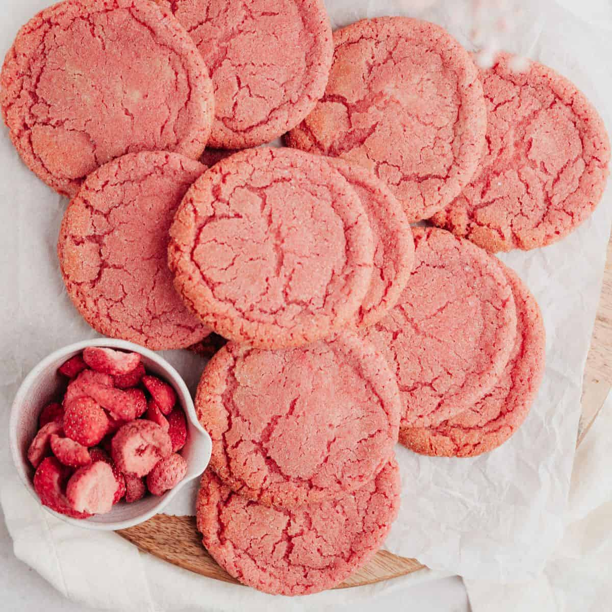

Raspberry Strawberry Cookies

Description
These raspberry strawberry cookies are bright and fruity,
making them perfect for Valentine’s Day!
Ingredients
- 3 sticks unsalted butter room temperature
- 1 cup granulated sugar
- 1 teaspoon vanilla extract
- 1/4 teaspoon kosher salt
- 1/4 teaspoon almond extract
- 1/4 cup freeze-dried strawberry powder
- 1/4 cup freeze-dried raspberry powder
- food coloring if desired
- 3 cups all-purpose flour
Instructions
-
Mix together the butter and sugar until combined.
Add the vanilla and salt. Split between 3 bowls.
-
Add the almond extract to one bowl, the strawberry powder to another bowl,
and the raspberry powder to the last bowl.
Add food coloring if desired.
Mix the contents of each bowl until homogenous and well-combined.
-
Add 1 cup flour to each bowl, and mix each bowl until a dough forms.
Feel free to drizzle some water (no more than a few tablespoons) if the dough seems dry.
Let the dough chill for 30 minutes in the refrigerator.
-
Roll each dough out to 1/4” thick. You’ll be layering the doughs, so try to make them similar in shape and thickness. Trim the edges until you get a smooth rectangle (you can still bake the trimmings), and cut out cookies with a cookie cutter or a paring knife.
-
Place the cookies on an ungreased baking sheet and sprinkle with sugar.
Bake at 350F for 15 to 20 minutes, until the edges begin to brown.
Cool slightly on the pan, then transfer to a rack to cool to room temperature.